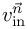

Simulate with complex geometries and complex physics
%BND_inflow%
inflow velocity boundary condition (Dirichlet type)
Normal Velocity
%BND_inflow% defines a boundary condition of Dirichlet type in normal direction. The syntax for defining the velocity  in normal direction at an inflow boundary is:
BC_v($xyz$) = (%BND_inflow%, )
Example 1: Inflow with velocity of normal to boundary elements with BC-flag $inflow$ .
- The boundary condition is relative to a movement of the boundary element, in particular: if the inflow boundary element is moving, the resulting total velocity will be the sum of the velocity of the movement plus the normal velocity at the inflow.
- The normal vector points to the inside.
- This boundary condition for the velocity is of Dirichlet type as the velocity is explicitely prescribed. Hence the boundary condition for the hydrostatic and dynamic pressure should be of Neumann type e.g.:
BC_p($inflow$) = (%BND_wall%) BCON($inflow$,%ind_p_dyn%) = (%BND_AVERAGE% , 0) # a lower order Neumann type condition
Special Case: Tangential Components
The statement %BND_inflow% with one parameter defines the velocity in normal direction. Sometimes it is also necessary to have tangential components in the inflow boundary conditions, e.g. for modeling realistic inflow behaviour in filling processes. This can be done by specifying two further parameters. Let be the normal on the boundary element. Then two tangential vectors (non-unique!) can be found such that are all perpendicular to each other. Then also velocities for each of these directions can be prescribed. Syntax:
BC_v($xyz$) = (%BND_inflow%, , , )
Example 2: Add a random fluctuation of tangential velocities at the inflow. Total order of magnitude of these velocities is around 7 percent of the inflow velocity:
begin_alias{}
"v_in" = " 10.0 " # normal inflow velocity
"InflowFluctuations" = " 0.07 " # magnitude of fluctuations relative to normal velocity
end_alias
BC_v($inflow$) = (%BND_inflow%, &v_in&, ... # normal inflow velocity
[ &v_in& * rand(-&InflowFluctuations&) ], ... # velocity component in tangential direction a
[ &v_in& * rand(-&InflowFluctuations&) ]) # velocity component in tangential direction b
- For the special case of a filling with perturbation it is ok, that the are not uniquely defined, because we want to model a random behaviour there and for that it is only important that the tangential vectors are perpendicular.
- MESHFREE issues a warning if it is detected that tangential velocities are prescribed by the user, because in most cases, this is not what the user intended to do.